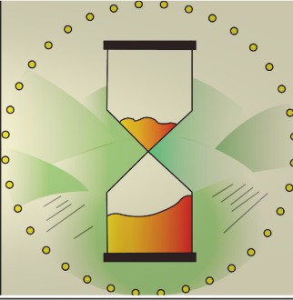

Welcome
I'm a Computer Science student at the University of Cincinnati focused on low-level systems, and hands-on hardware and robotics integration.
What's on this site?
This workbench combines several interactive mini-games, web prototypes, and project demos into one expandable hub. Feel free to check out the arcade or look through my pinned builds.
Primary Tech Stack
C++, Python, Embedded Systems (IMU & Sensor Integration), JavaScript, HTML5/CSS3, Git.
Get in Touch
Open to co-op opportunities in software, IT, and engineering. Reach me on LinkedIn or by email.
Mini-Game: Reflex Dodge
Use your Arrow Keys or A / D to steer the blue cube and avoid oncoming obstacles.
Mini-Game: Reaction Test
Click the box when it turns green. Don't jump the gun!
Best: --
Projects Done so Far
A collection of current software builds, system utilities, and hardware projects.
Obstacle avoidance using embedded C++, an MPU-6050 IMU with a Mahony filter, and a gyro sweep.
C++RoboticsIMU GitHubProgramming robot behaviors in LabVIEW using color sensor logic for path correction; designed and assembled the initial mechanical prototype for object transportation and dropping certain materials based on weight.
LabVIEWRoboticsSensory Integration GitHubAWS Bedrock + S3 retrieval tool that searches uploaded docs and logs and answers questions with source citations
PythonCloudLLMRAG GitHubLed a 4-person team to design a bicycle-powered pump system, converting circular motion into a vertical pumping process using mathematical modeling and biomechanical data.
Data AnalysisData VisualizationModular slot for future web apps, simulations, and robotics control scripts.
Work in Progress